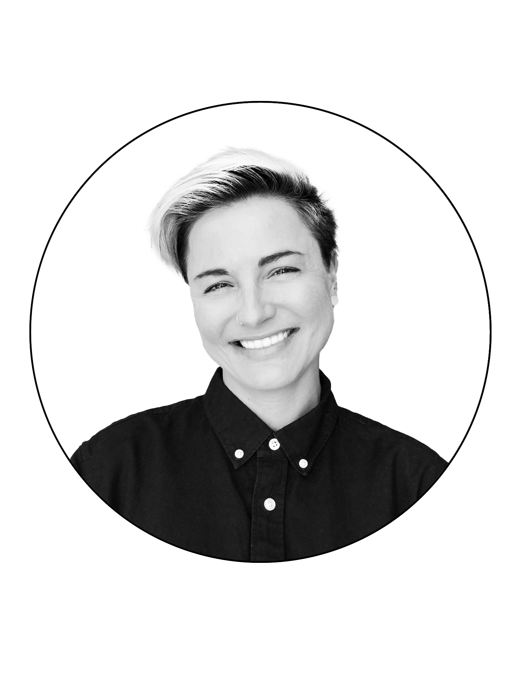

After touring as a professional drummer in South Africa, I started my career in hospitality, working on
luxury yachts in
the French and Turkish Rivieras, then backpacked as a barista and cook in Australia. When returning home to
the UK, I
brought my international eye and experience to design.
I have a passion for multi-media design--equipped
with a
well-traveled background and a niche skillset, I can create works of art in print, online, and in homes.
A hybrid they call me, A digital Swiss army knife...
I'm a talented designer that lives in the Adobe Creative Suite, colour palettes, moodboards, typography and
CSS.
Photoshop, Indesign, Illustrator, Lightroom, Bridge, Photojunction, and Figma.
I can create, edit, retouch, and organise anything your heart desires.
Interior design is a passion of mine too - using 3D Sketch-Up, I can conjure up bespoke wall gallery
displays
that can
turn a space into an art piece, a visual wonder.
And to round out my eclectic resume, I am a Tech-head too.
HTML, CSS, JS, React, Wordpress, Bootstrap, Node, Github, and SQL
From wireframes to deployment , the intensive full-stack web development bootcamp I completed, honed my
aptitude and
shaped my code and web knowledge.